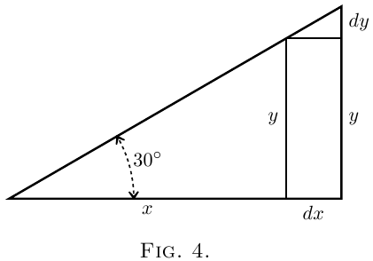
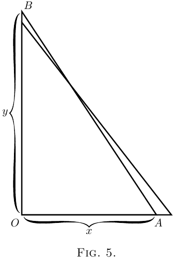

第 3 章相对增长
在整个微积分中，我们处理的是不断增长的量以及增长的速率。我们将所有的量分为两类：常量和变量。那些我们认为是固定值的量，称为常量，通常用字母 \(a\)、\(b\) 或 \(c\) 等字母表示；而那些认为可以增长（或者像数学家所说的“变化”）的量，用字母 \(x\)、\(y\)、\(z\)、\(u\)、\(v\)、\(w\)，或有时用 \(t\) 来表示。
此外，我们通常同时处理多个变量，考虑一个变量如何依赖于另一个变量。例如，我们思考投射物到达的高度如何取决于到达该高度所用的时间。或者考虑一个给定面积的矩形，其长度增加时，宽度会如何相应地减少。又或者思考梯子的倾斜角度发生变化时，梯子到达的高度会如何变化。
假设我们有两个这样的变量，它们之间有相互依赖的关系。一个变量的改变会导致另一个变量的改变，因为它们之间存在这种依赖关系。设其中一个变量为 \(x\)，另一个依赖于它的变量为 \(y\)。
假设我们让 \(x\) 变化，也就是说，让它增加一点，记为 \(dx\)。这样 \(x\) 就变成了 \(x + dx\)。因为 \(x\) 发生了变化，\(y\) 也会随之变化，变成 \(y + dy\)。在这里，\(dy\) 的值可能为正，也可能为负；而且它的大小通常不会（除非极其偶然）等于 \(dx\) 的大小。

举两个例子。
（1）令 \(x\) 和 \(y\) 分别为直角三角形（图4）的底边和高，而斜边的倾斜角度固定为 \(30°\)。我们假设这个三角形在扩展的同时保持最初的角度不变，那么当底边增长为 \(x + dx\) 时，高度会变为 \(y + dy\)。在这里，增加 \(x\) 会导致 \(y\) 的增加。小三角形的高为 \(dy\)，底边为 \(dx\)，它与原三角形相似；显然，\(\dfrac{dy}{dx}\) 的比率与 \(\dfrac{y}{x}\) 的比率相同。由于角度是 \(30°\)，我们可以看到这里
（2）在图5中，设 \(x\) 表示梯子底端距墙的水平距离 \(AB\)，梯子长度固定，而 \(y\) 表示其在墙上到达的高度。现在显然 \(y\) 依赖于 \(x\)。很容易看出，如果将底端 \(A\) 稍微移开一点，顶端 \(B\) 会稍微降低。用科学语言描述这一情况：如果我们将 \(x\) 增加为 \(x + dx\)，那么 \(y\) 将变为 \(y - dy\)；即当 \(x\) 获得正增量时，\(y\) 的增量是负的。

那么具体是多少呢？假设梯子足够长，使得当底端 \(A\) 离墙 \(19\) 厘米时，顶端 \(B\) 刚好离地 \(1.8\) 米。如果将底端拉出 \(1\) 厘米，顶端会下降多少？全部换算成厘米：\(x = 19\) 厘米，\(y = 180\) 厘米。增量 \(dx\) 为 \(1\) 厘米，即 \(x + dx = 20\) 厘米。
\(y\) 减少的量是多少？新高度将为 \(y - dy\)。用勾股定理可以算出 \(dy\) 的大小。梯子的长度为
显然，新高度 \(y - dy\) 将满足以下条件：
现在 \(y\) 为 \(180\)，所以 \(dy = 180 - 179.89 = 0.11\) 厘米。
因此，我们看到使 \(dx\) 增加 \(1\) 厘米导致 \(dy\) 减少 \(0.11\) 厘米。
而 \(dy\) 对 \(dx\) 的比率可以表示如下：
也可以看出，除了一种特殊位置外，\(dy\) 的大小一般不会与 \(dx\) 相同。
在整个微分计算中，我们一直在寻找一个有趣的量，实际上是一个比率，即当它们都无限小的时候，\(dy\) 与 \(dx\) 的比例。
需要注意的是，只有当 \(y\) 和 \(x\) 之间存在某种关系时，才能找到这个比率 \(\dfrac{dy}{dx}\)，因此当 \(x\) 变化时 \(y\) 也会随之变化。例如，在第一个例子中，当三角形的底边 \(x\) 变长时，其高度 \(y\) 也会增加；而在第二个例子中，当梯子的底端与墙的距离 \(x\) 增加时，梯子所到达的高度 \(y\) 则相应减少，起初减少较慢，但随着 \(x\) 增大，减少得越来越快。在这些情况下，\(x\) 与 \(y\) 之间的关系完全明确，可以用数学表达出来，例如 \(\dfrac{y}{x} = \tan 30°\) 和 \(x^2 + y^2 = l^2\)（其中 \(l\) 是梯子的长度），并且 \(\dfrac{dy}{dx}\) 有我们在每个例子中找到的意义。
如果 \(x\) 仍表示梯子底端到墙的距离，而 \(y\) 则表示墙的水平长度，或墙中的砖数，或自墙建成以来的年数，任何对 \(x\) 的改变都不会对 \(y\) 产生任何影响；在这种情况下 \(\dfrac{dy}{dx}\) 没有任何意义，也无法找到其表达式。当我们使用微分 \(dx\)、\(dy\)、\(dz\) 等时，\(x\)、\(y\)、\(z\) 等之间必须存在某种关系，这种关系称为 \(x\)、\(y\)、\(z\) 的“函数”；例如上述表达式 \(\dfrac{y}{x} = \tan 30°\) 和 \(x^2 + y^2 = l^2\) 就是 \(x\) 和 \(y\) 的函数。这些表达式隐含地（即没有明确显示）包含了将 \(y\) 表示为 \(x\) 的函数，或将 \(x\) 表示为 \(y\) 的函数，因此它们被称为 \(x\) 和 \(y\) 的隐函数；可以分别写成
和
这些最后的表达式明确地（即清晰地）表示出 \(y\) 关于 \(x\) 或 \(x\) 关于 \(y\) 的值，因此被称为 \(x\) 或 \(y\) 的显函数。例如 \(x^2 + 3 = 2y - 7\) 是 \(x\) 和 \(y\) 的隐函数；可以写成 \(y = \dfrac{x^2 + 10}{2}\)（\(x\) 的显函数）或 \(x = \sqrt{2y - 10}\)（\(y\) 的显函数）。我们可以看到 \(x\)、\(y\)、\(z\) 等的显函数是一个随 \(x\)、\(y\)、\(z\) 等变化而变化的值，可以是一个变量或多个变量一起变化。因此，显函数的值称为因变量，因为它依赖于函数中其他变量的值；这些其他变量称为自变量，因为它们的值不依赖于函数所取的值。例如，如果 \(u = x^2 \sin \theta\)，\(x\) 和 \(\theta\) 是自变量，而 \(u\) 是因变量。
有时几个量 \(x\)、\(y\)、\(z\) 之间的确切关系未知，或者不方便陈述；仅知道或方便陈述的是这些变量之间存在某种关系，使得 \(x\)、\(y\)、\(z\) 等量不能单独变化而不影响其他量；此时函数关系可用 \(F(x, y, z)\) 表示（隐函数），或用 \(x = F(y, z)\)，\(y = F(x, z)\) 或 \(z = F(x, y)\)（显函数）表示。有时字母 \(f\) 或 \(\phi\) 被用来代替 \(F\)，因此 \(y = F(x)\)、\(y = f(x)\) 和 \(y = \phi(x)\) 都表示同样的意思，即 \(y\) 的值以某种未说明的方式依赖于 \(x\) 的值。
我们称比率 \(\dfrac{dy}{dx}\) 为“\(y\) 关于 \(x\) 的导数”。这是一个严肃的科学术语，用来描述这个非常简单的概念。但我们不应被严肃的术语吓倒，因为概念本身并不难。与其被吓倒，不如简单地对这种不必要的复杂命名方式表示一下不满，然后继续讨论这个简单的内容，即比率 \(\dfrac{dy}{dx}\)。
在学校学过的普通代数中，你总是在寻找一些被称为 \(x\) 或 \(y\) 的未知数；有时还需要同时找到两个未知数。而现在，你需要以一种新的方式去“寻找”，目标不再是 \(x\) 或 \(y\) 本身，而是这个被称为 \(\dfrac{dy}{dx}\) 的奇特比率。求 \(\dfrac{dy}{dx}\) 的过程称为“求导”。但是，请记住，我们想要的是在 \(dy\) 和 \(dx\) 都无限小的情况下，这个比率的值。导数的真实值是当它们被视为极微小的时候所接近的极限。
现在让我们学习如何去寻找 \(\dfrac{dy}{dx}\)。
第3章注 如何读微分符号
不要犯初学者的错误，认为 \(dx\) 意味着 \(d\) 乘以 \(x\)，因为 \(d\) 并不是一个因子，它表示变量的微小变化。\(dx\) 应读作“dee-eks”。
如果读者没有人指导这方面的内容，这里简单说明一下如何读这些导数。\(\dfrac{dy}{dx}\) 读作 y 关于 x 的导数。同样，\(\dfrac{du}{dt}\) 表示 u 关于 t 的导数。
二阶导数将在后面遇到。它们像这样： \(\dfrac{d^2 y}{dx^2}\)，表示 y 关于 x 的二阶导数，意思是对 \(y\) 关于 \(x\) 的求导运算已经（或必须）进行两次。
另一种表示函数已经被求导的方式是给函数符号加上一个撇号。因此，如果 \(y=F(x)\) 表示 \(y\) 是 \(x\) 的某个未具体说明的函数，我们可以写成 \(F'(x)\) 来代替 \(\dfrac{d\bigl(F(x)\bigr)}{dx}\)。类似地，\(F''(x)\) 表示原函数 \(F(x)\) 已对 \(x\) 求导了两次。